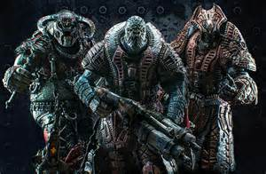

-

- Ticker - a small fast grub with a self detonating bomb on its back.
- Wild Ticker - a ticker without the bomb.
- Wretch - a monkey/dog-like Locust that can scream and stagger you and jump over defenses and hit you.
- Drone - a regular Locust with a long range gun.
- Savage Drone - a less armored drone with a medium ranged weapon with a bayonet and melee charge.
- Grenadier (Elite) - a Locust with a shotgun that also has Frag Grenades.
- Flame Grenadier - a grenadier with a flamethrower.
- Theron Guard - a locust with a bow that shoots highly explosive arrows.
- Savage Theron - a less armored Theron Guard with a melee cleaver.
- Sniper - a Locust with a sniper rifle.
- Kantus - a tall Locust with an automatic pistol and poisonous "ink" Grenades and the ability to heal and revive other Locust.
- Armored Kantus - a Kantus with heavy armor that can only take damage from expolisives and fire or headshots.
- Butcher - a large Locust with a melee cleaver.
- Boomer - a large Locust with a highly explosive gun called a Boomshot.
- Flame Boomer - a Boomer with a flamethrower.
- Savage Boomer - a Boomer with an explosive gun that shoots its rounds into the ground under cover and emerges upon reaching target.
- Grinder - a large Locust with a powerful minigun.
- Mauler - a large locust with an exlosive flail and a nearly indestructable shield called a Boomshield.
- Serapede - a large armored centipede that can only be damaged from a weak spot in the behind.
- polyps - small Lambent spider-like creatures that jump over cover and attack melee.
- Lambent Wretch - an explosive Lambent wretch.
- Former - a Lambent Human that runs fast and attacks melee.
- Lambent Drone - an explosive Lambent drone.
- Drudge - a very mutated Lambent with a medium ranged gun that has very violent explosions and can morph/mutate into a very strong monster.
- Headsnake - a Lambent snake that sometimes is the surviving remains of a morphed Drudge that died.
- Brumak - a huge Locust monster with rockets and miniguns attached to him.
- Reavers - a squad of large flying Locust that shoot rockets and have Locust riding them.
- Corpser - a set of spider-like Locust that attack with claws and can burrow undergound to heal and can attack while burrowed.
- Berserker - a few large Locust immune to all except fire and explosives that uses melee and can chrage through and destroy and fortifications.
- Lambent Berserker - one Lambent Berserker that can jump attack and leaks deadly Immulsion when nearling death.
- Gunker - a group of very large Lambent that can extend their arms far to melee you and can shoot huge Immulsion Mortar attacks.
There are also several Bosses that attack on every 10th wave. Only one boss type attacks each time and it is random. They are:

The goal of the game is to win all 50 waves, meaning at least one person survives each wave after killing all the Locust. The scope of influence for completing this task is the millions of players on Xbox Live that will see the achievements on your gamer profile for beating Horde on Insane. The goal is worthwhile because any person that has ever played the game will know that you are a true pro and will hold you in the highest respect due to this great and very challenging achievement. It also gives the player a very great feeling of satisfaction and pride.